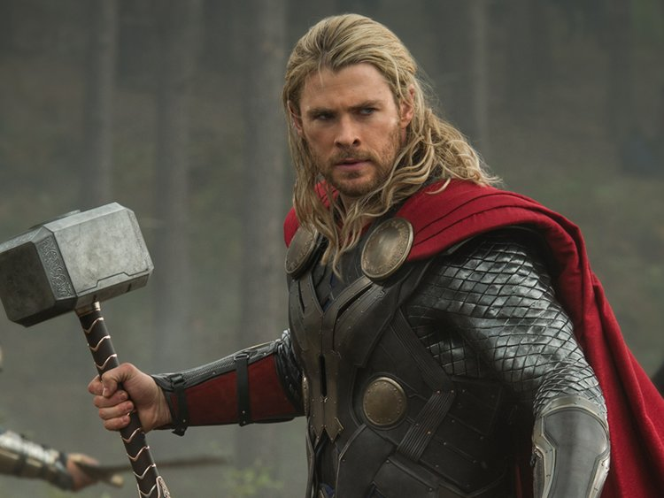

Thor's Resume
By Alina Zhitnik
Check out my Fan Page!

Contact Information
Email: thorman30@gmail.com
Phone: 516-5456-7891
Address: 30 Shelter Rock Rd, Asgard, World 1
About Thor
Thor Odinson is the Asgardian God of Thunder, the former king of Asgard and New Asgard, and a founding member of the Avengers. When his irresponsible and impetuous behavior reignited a conflict between Asgard and Jotunheim, Thor was denied the right to become king, stripped of his power, and banished to Earth by Odin. He possesses the enchanted hammer, Mjolnir, which grants him the ability to fly and manipulate weather amongst his other superhuman attributes. After being banished, he realized his role in life and became the true hero he was meant to be.
Work Experience
Courage is Immortal
- With new found strength, a war is waged between Thor's Homeland and the frost giants. Thor arrives and fights Loki before destroying the Bifrost Bridge to stop Loki's plan, stranding himself in Asgard. Odin awakens and prevents the brothers from falling into the abyss created in the wake of the bridge's destruction. Thor ended the war with his bravery and selflessness.
The Dark World
- Upon coming into contact with the substance, it draws Thor from Asgard back to Earth. Thor takes Jane to Asgard to be cured from the Aether. Devising a plan with his brother, the war criminal Loki, Thor headed to The Dark World to destroy the Aether and saved Asgard.
Ragnarok
- Imprisoned on the other side of the universe, the mighty Thor finds himself in a deadly gladiatorial contest that pits him against the Hulk, his former ally and fellow Avenger. Thor's quest for survival leads him in a race against time to prevent the all-powerful Hela from destroying his home world and the Asgardian civilization.
Hobbies and Interests
- Controlling Lightening
- Playing with Rain
- Swinging around a Hammer